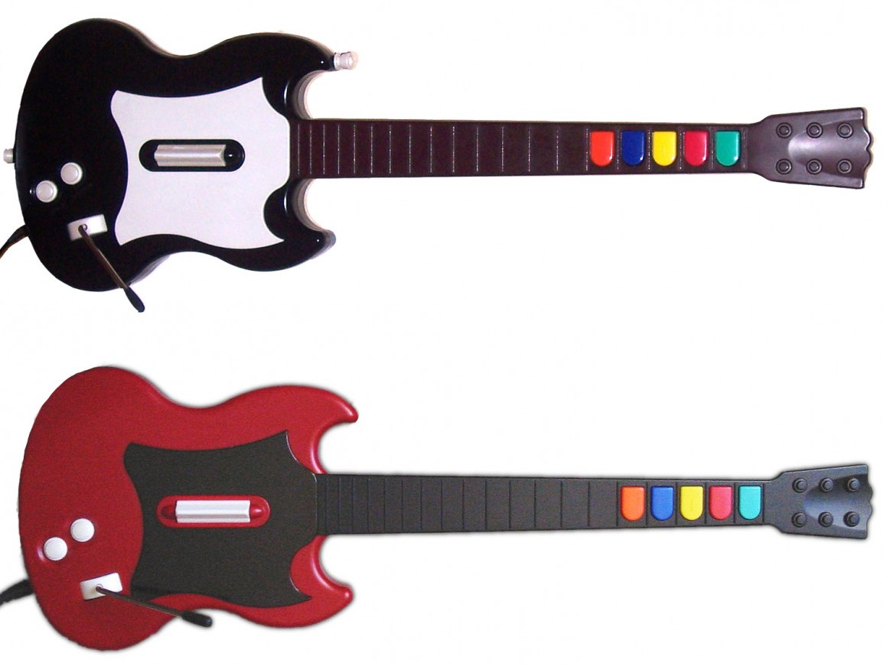
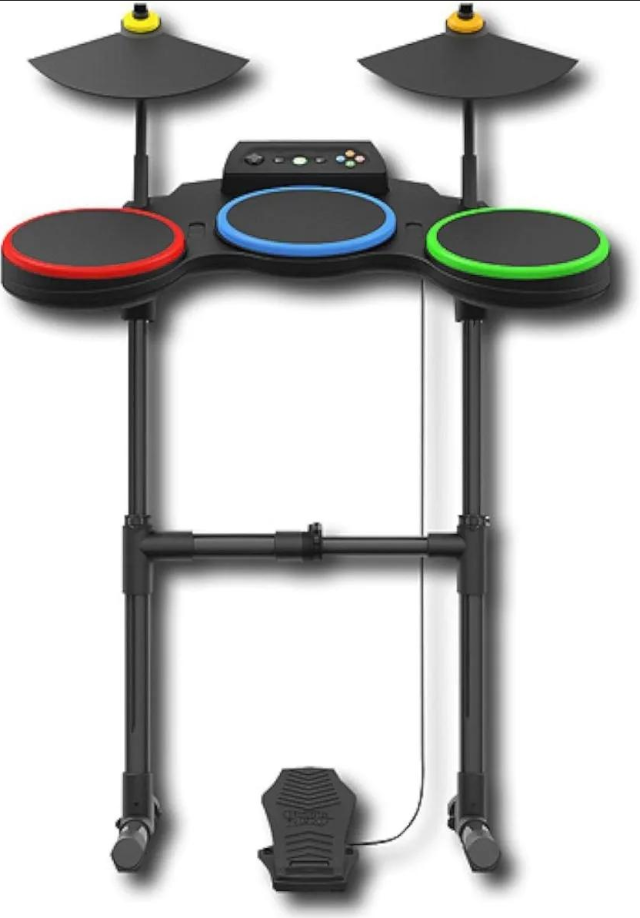

Controles de juego
Como es sabido Guitar Hero es un juego que usan controles que simulan ser instrumentos musicales, para las primeras versiones de Guitar Hero
se usaban guitarras, pero con el paso del tiempo se fueron añadiendo nuevos instrumentos como baterías o micrófonos. A continuación se
muestran los diferentes controles que han aparecido en las distintas versiones de Guitar Hero.
Lista de controles de la saga Guitar Hero:
| Control | Tipo de instrumento | Versiones compatibles | Imagen |
|---|---|---|---|
| Controles de guitarra | |||
| Guitarra Gibson SG | Guitarra | Guitar Hero, Guitar Hero II |  |
| Guitarra Fender Stratocaster | Guitarra | Guitar Hero III: Legends of Rock, Guitar Hero World Tour |  |
| Guitarra Gibson Les Paul | Guitarra | Guitar Hero Aerosmith, Guitar Hero 5 |  |
| Controles de batería | |||
| Batería estándar de 5 piezas | Batería | Guitar Hero World Tour, Guitar Hero 5 |  |
| Batería avanzada de 5 piezas | Batería | Guitar Hero: Metallica, Guitar Hero: Warriors of Rock |  |
| Controles de micrófono | |||
| Micrófono estándar | Voz | Guitar Hero World Tour, Guitar Hero 5 |  |